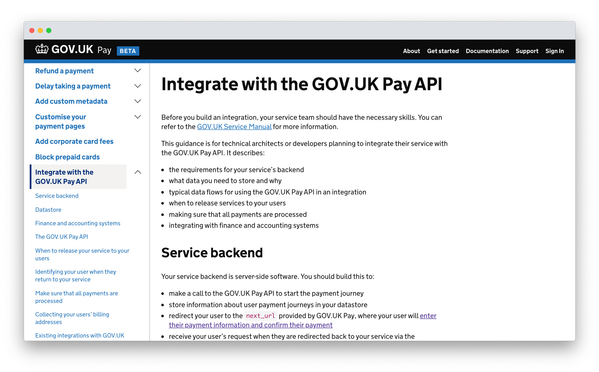

The GOV.UK Pay homepage
Most people have to pay government money at some point or another. For example, when you pay tax, renew your passport, get a new driver’s licence, or pay for visa applications.
Before GOV.UK Pay was launched government services used a range of different payment providers. Each one offered a jarring and often inaccessible payment experience for users. GOV.UK Pay gives users a seamless, accessible and trusted payment experience using the GOV.UK design language.
The accessible GOV.UK Pay user facing payment screens
Managing the reconciliation of payments across multiple payments types, such as cards, direct debit and e-wallets, is a complex process that involves many manual steps. Providing one reporting interface that shows all payment types and providers makes this process more efficient.
GOV.UK Pay provides detailed and timely transaction information that helps government call centres keep citizens better informed about the status of their payments. This more accurate information helps reduce government costs of running these call centres.
Public sector organisations issue millions of refunds to citizens each year, GOV.UK Pay makes this process more efficient and secure. Instead of refunding payments via time consuming manual processes, it is becoming standard to issue full or partial refunds directly to the cards used to make the original payments. That’s not just more user-friendly, it also helps prevent fraud.
GOV.UK Pay staff facing admin tool
Public sector digital services often need to accept payments. The teams building those services have to procure and integrate a new payments system - which takes time.
With GOV.UK Pay, service teams don't have to worry about this responsibility because GOV.UK Pay does the heavy lifting in this regard. Government services integrate with our platform through simple APIs we’ve developed. Developers and service owners can trial the platform in a sandbox environment. This allows them to test the frontend payment user journey, the backend financial tracking functionality, and test how it integrates with their existing systems.
Using GOV.UK Pay makes it quicker and cheaper for the government to launch new services, since it avoids unnecessary repetition of the same procurement and integration work every time.
GOV.UK Pay technical documentation